祝关注头马的小伙伴们元旦快乐~~
一上来就用这大红的配色亮瞎各位的双眼是不是很喜庆，
看着身边很多小伙伴花式跨年
小编心想：“heng,有什么嘛，不就是一闭眼一睁眼的事么”
可是我们还剩必须充满期待保持乐观的迎来崭新的2017呐，毕竟
新的一天太阳还是会照常升起
你还是得照常工作
所以不保持一个良好的心态怎么能行呢，你说对不对？
但是在上周五北航头马元旦趴上，各位小伙伴一起欢聚一堂的美好瞬间
小编选择在这个看不见了路上行人笑容的今天
这个白色的季节
记录下来让大家以供回味，
希望17年的各位可以玩的更开心！

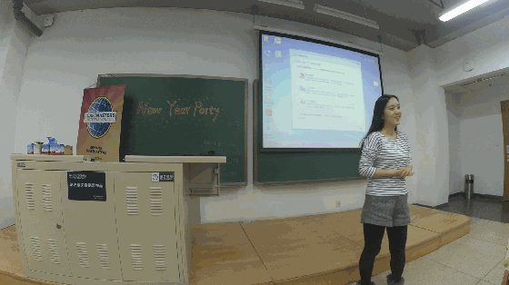
二姐当副主席的时候就做到了女生也能顶半边天，这回新官上任誓要顶整片天，愉快的开场活跃了下气氛
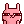
二姐总是辣么美~~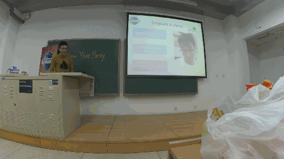
官员换届是一个俱乐部的非常重要的事情，良好的工作交接会让每位官员都更省心，于是Bowen作为俱乐部马上就要工作了的老人主持换届，上一发到场的一些官员的照骗把~
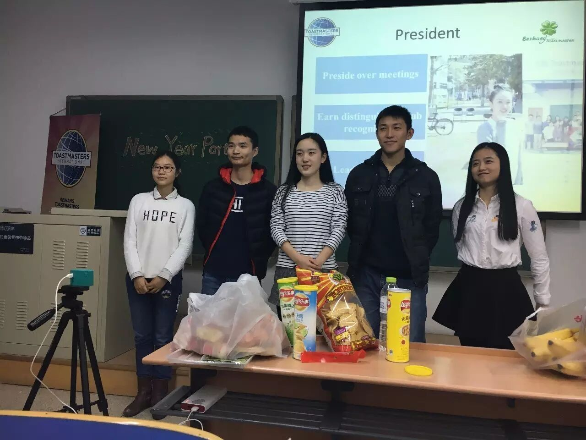
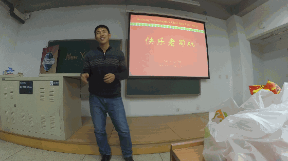
没错，游戏环节是由我们的年轻帅气并且自称为“快乐老司机”的博士德隆来主持，据德隆自己透露当晚正好满十八岁生日真是好巧呢， 不过老司机一言不合发车了，呜~~~~~
不过老司机一言不合发车了，呜~~~~~
由于负责记录的小编当晚也一不小心上车了，长时间的透支，加上平时不加锻炼和场面过于火(FU)爆(LI)一度失去控制，活动完后一度摇摇欲坠不能自拔精疲力竭身体仿佛被掏空，于是贤者，不不，现在只能靠片刻回忆再加上一些现场观众的回忆和录像来写minutes,经过和微信官方风纪审查委员会商议，我们只能暂时放上一些河蟹了的动图以飨读者，希望大家能不拘泥与形式的感受到现场的乐趣：
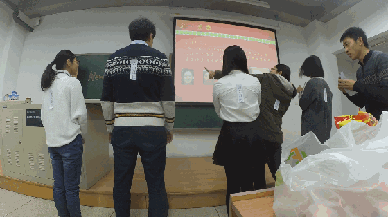
游戏参与者：大帝，Kiki，Joy，Jill，多老师。
看对方身后的字然后连线，先连完的且正确的获得好吃的奖励！没错，我来翻译一下，keven背后的成语就是-老当益壮，老司机好姿势~!
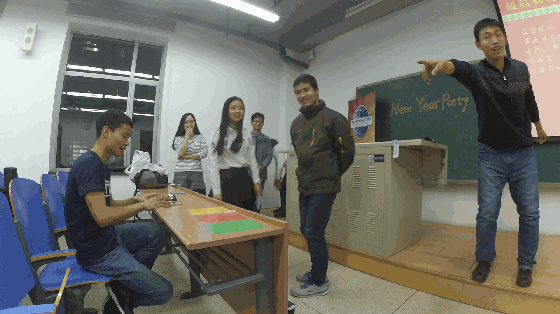
游戏参与者：二姐，Kiki，Vance，Joy，Bowen，Flair
第二个游戏是-没错，看看Kiki对Flair做了什么，就知道老司机这车发的，哎，简直呜。二姐和vance都表示看不下去了啊，果然做人要留一线，不然真的都没法夹着尾巴做人了呢。
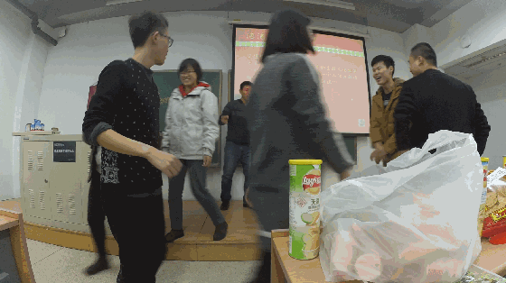
游戏参与者：Francis，火山，多老师等~
什么？这是在群*河蟹*么？不是的，其实这是在玩一个快速配对的小游戏，不过口味也是想要有多重就能有多重的哦，我只记得火山的“左嘴唇”，话说这是什么鬼，尺度还是要有的嘛，不带这么玩的啊，
最后大家还是在自尊自爱的前提下完成了小游戏，虽然没有出现什么突发情况，这说明大家的保护措施做的好啊，所以还是要多学习一个哦！
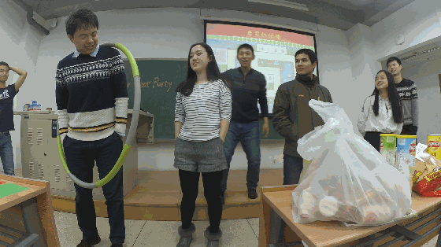
二姐，你为何那么熟练
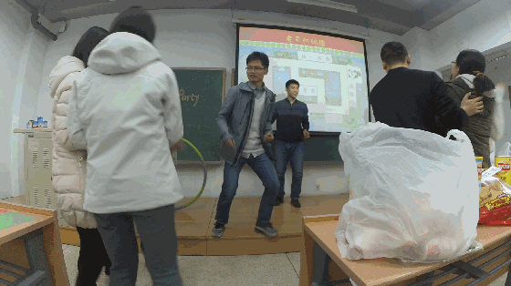
被大伙抛弃了的Vance和火山
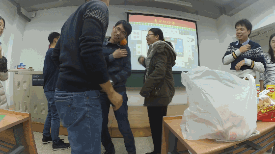
对于这个游戏，看哪方先完成5人橘子转移游戏，时间短的一方胜利，德隆说了一句：“你要是赢了，那么你才是真正的输了！”哈？我花了好久才理解呢，可怜纯洁的小编我，自己回过头来看那晚上的视频才发现这几位像是在“故意”耽误大家时间呐，难怪会输呢，哎羞耻的不忍直视啊，大写的污。
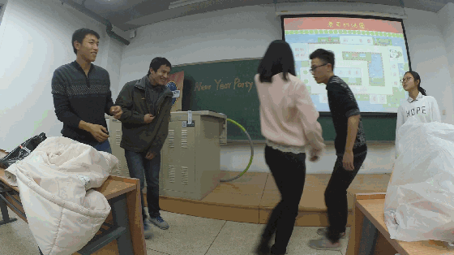
好啦，以上就是一些能够发到大家眼前的图，相信没到现场的肯定得后悔了，没事，每半年一次，下次再带你啊。
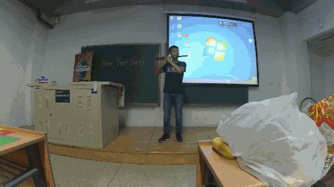
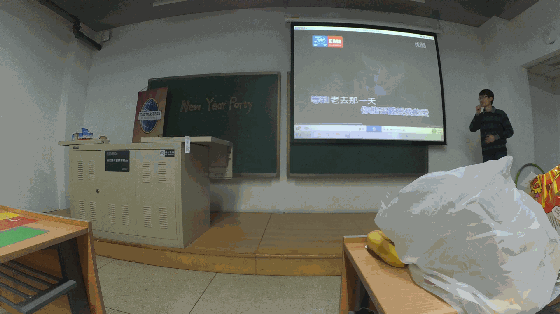
Winston的歌曲表演，对于从没登台表演如此羞射的深深来说真的是很大胆的一次表演，不过深深最后还是战胜了自己，并完美的完成了自己的舞台首秀，虽然大家都一开始很拘谨，但是最后都忍不住跟着一起唱了起来呢。

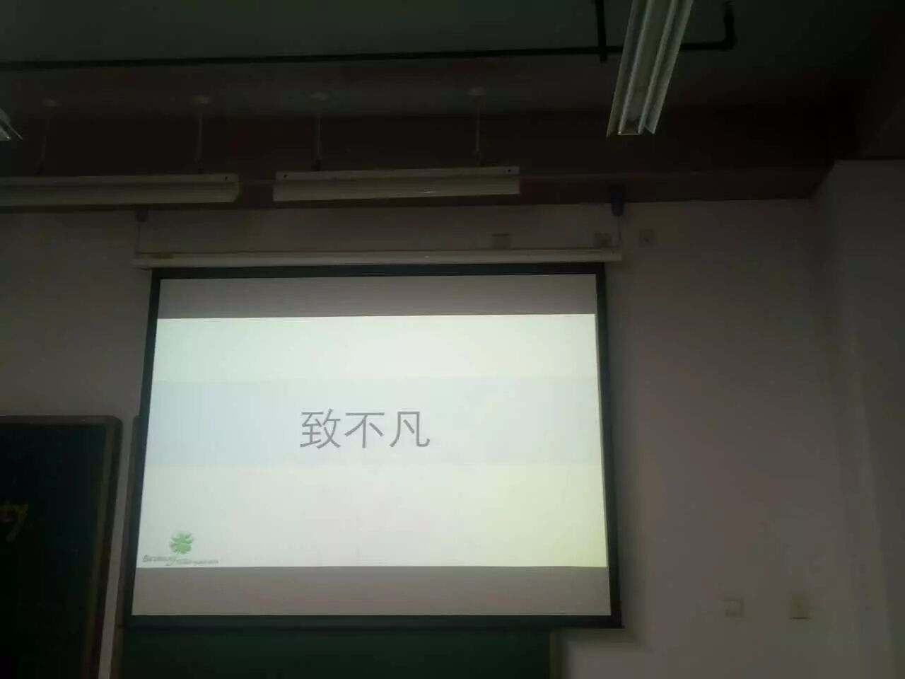
俱乐部新老交替正常之事，这不，马上要工作了的三位当晚就迎来了北航头马的小小的送别仪式，这不，Vance经典式钟摆站立许久不见又重回头马舞台了，相信此之谓送别并不是真正离别，头马舞台永远还是属于你们每一位曾经站在上面的头马们的，头马永远是你们的家。常回家看看咯，
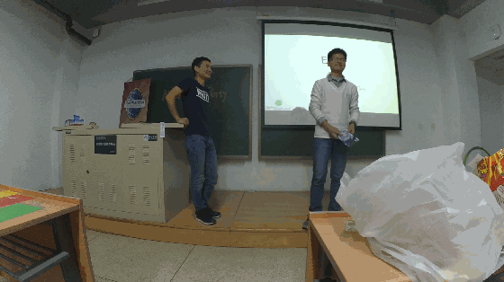
追风少年-Vance-不凡的你。希望今后的你继续一路向前，追寻更美好的未来。

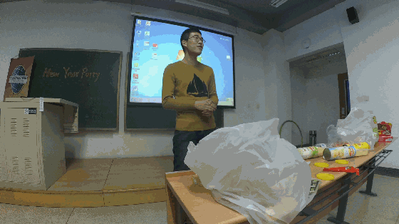
Kiki送博文，话说这两人从在俱乐部里就是纠缠不清啊，Kiki在PPT里也不乏大量的赞美之词，连我们都听的耳朵根都红了呢，作为曾经的北航头马主席，Bowen所付出的很多我就不多赘述，Best wishes to Bowen学长，今后也记得常回北航头马玩哦。（图为Bowen为大家带来的一曲《花香》）
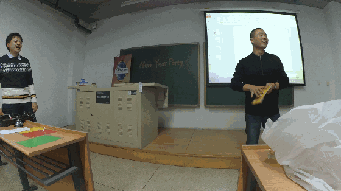
没错这就是著名火豹组合的火山，曾任VPE的他雷厉风行，乐于助人，无私奉献，舍己为人，经常会给我们谈谈心啊，聊聊人生，和理想，平时没别的爱好，就喜欢和街上的大叔大妈一块探讨探讨道德经和老子，嗯，这就是火山，什么？为啥叫火山，抱歉，因为他英文名字太长，我记不住啊。。调侃归调侃，即将去上海工作的火山，祝前程似锦，一路走好，我们也会永远想念你的（哭哭状）~~

"你说什么？"-Kiki精彩表演
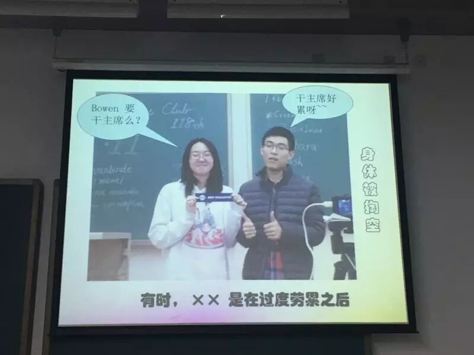
“日渐消瘦”的博文
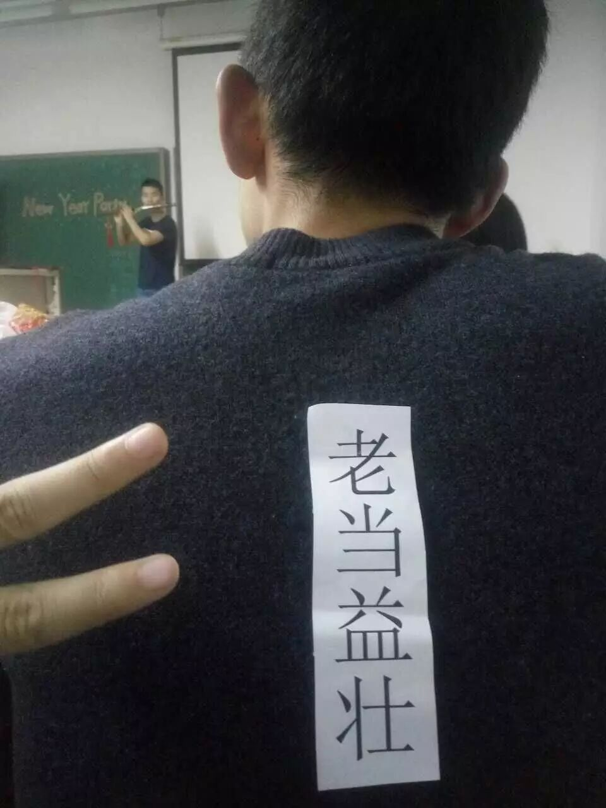
猜猜是哪位老司机？
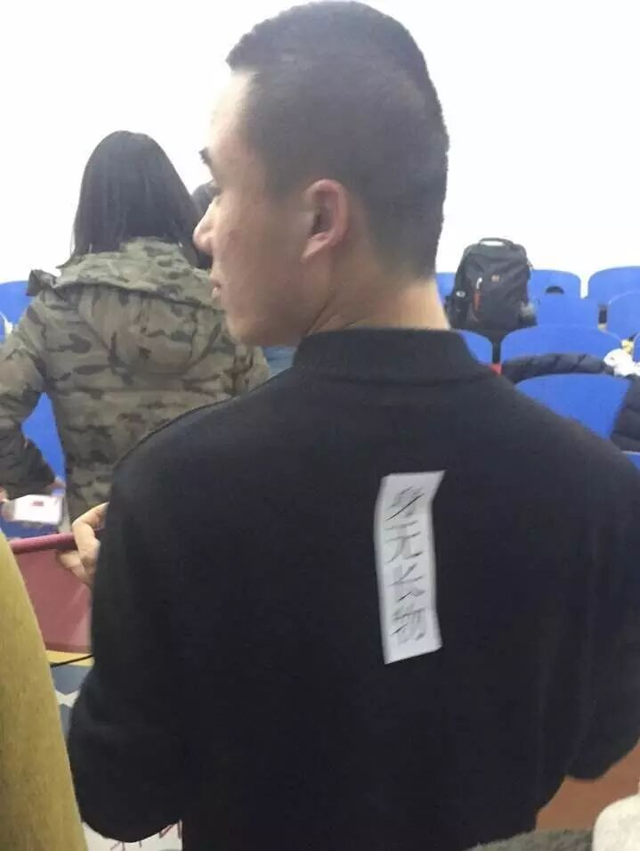
来我来翻译一下，火山背后那几个字是“身无长物”
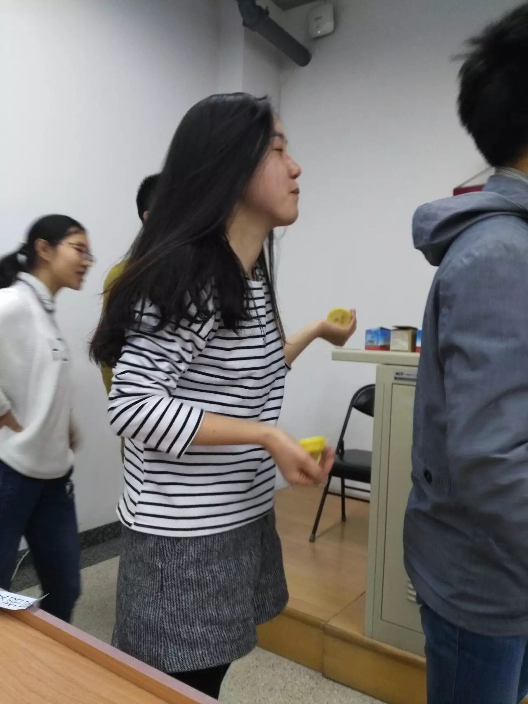
吃酸橙到吐的二姐
依然是挤满全场的大合照
Jill姐捋头发的瞬间好温柔~~
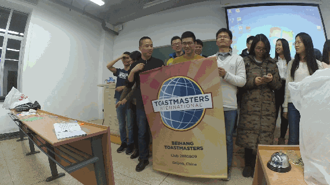
所以深深(Name)又深藏功与名的深藏在深深的(adv)背后咯？
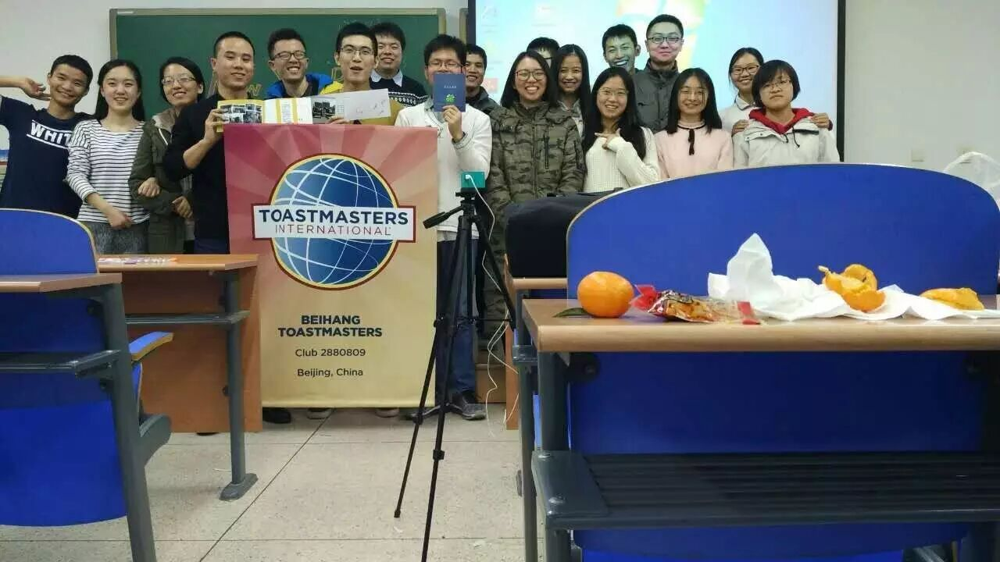
依然下半场！！！
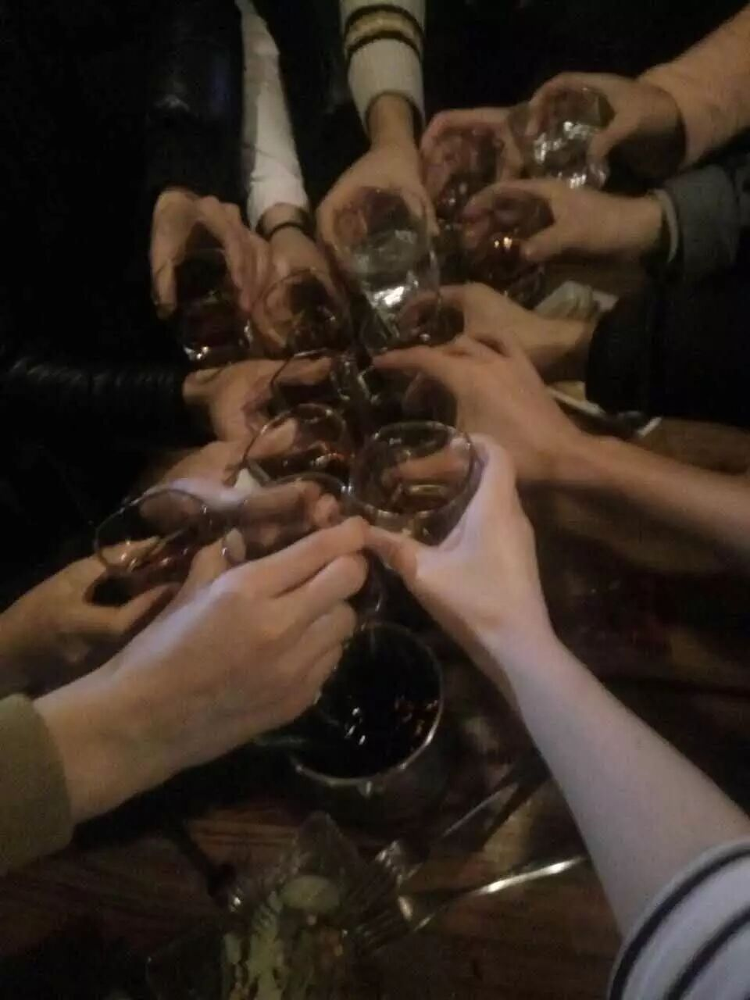
在此郑重通知下，今晚北航头马会议暂停
下一次会议是春节之后
再见，2016，
关注着头马的小伙伴们，
2017我们再见！
附上晚会视频链接
Amy-op 链接：http://pan.baidu.com/s/1kURayqj 密码：jwx9
Bowen-op 链接：http://pan.baidu.com/s/1o7SqoGE 密码：4bfr
Deron-game1 链接：http://pan.baidu.com/s/1pKP6tK3 密码：fuyi
Deron-game2 链接：http://pan.baidu.com/s/1hr957Zu 密码：ttoj
Deron-game3 链接：http://pan.baidu.com/s/1o8lndJO 密码：kmay
Deron-game4 链接：http://pan.baidu.com/s/1jI2qj2m 密码：cn39
Gastby-笛子表演 链接：http://pan.baidu.com/s/1i5Fj0C9 密码：04fy
Winston-一生有你 链接：http://pan.baidu.com/s/1mhOW5Os 密码：ziys
Vance-farewell 链接：http://pan.baidu.com/s/1o7ZbNN8 密码：bg17
Bowen-farewell 链接：http://pan.baidu.com/s/1geJbbSR 密码：r7vt
火山-farewell 链接：http://pan.baidu.com/s/1bUa9lW 密码：uig5
Bowen-花香 链接：http://pan.baidu.com/s/1o8pqQsq 密码：lced
Kiki-模仿傻子说话 链接：http://pan.baidu.com/s/1qXZDEFy 密码：hx6t
签名及最后的合照 链接：http://pan.baidu.com/s/1i5p0WGP 密码：uq3i
最后对于当晚打扰到复习的许多同学表示下歉意，希望你们都顺利的通过考试哟~~加油！！
https://mp.weixin.qq.com/s/HHozJ16eB7O3e0yXDkY4ng
本页为抢救式本地归档，图文已永久保存。